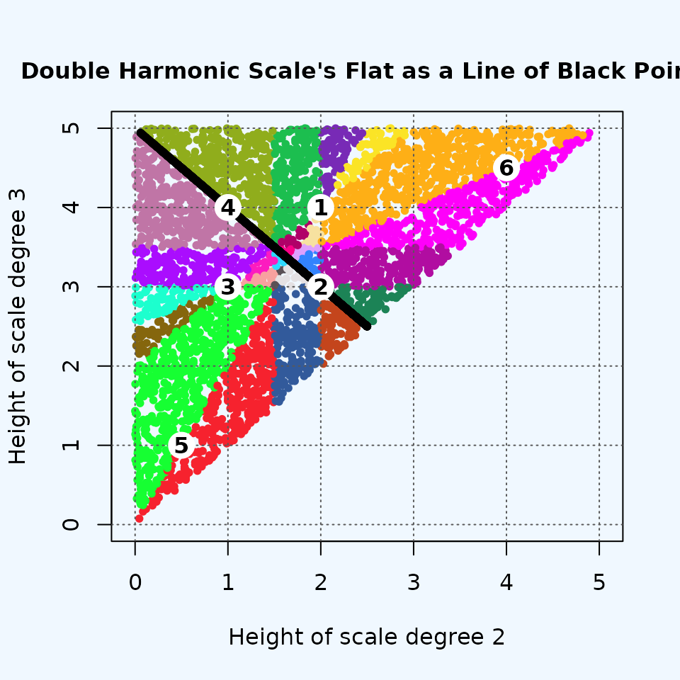
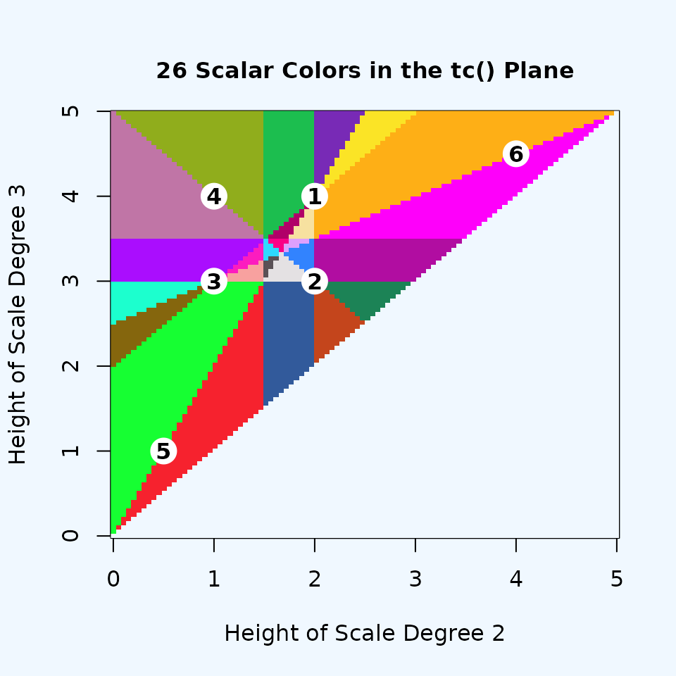
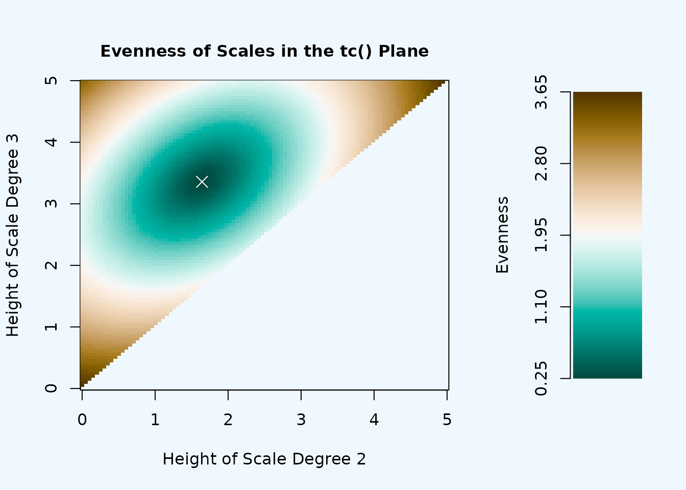
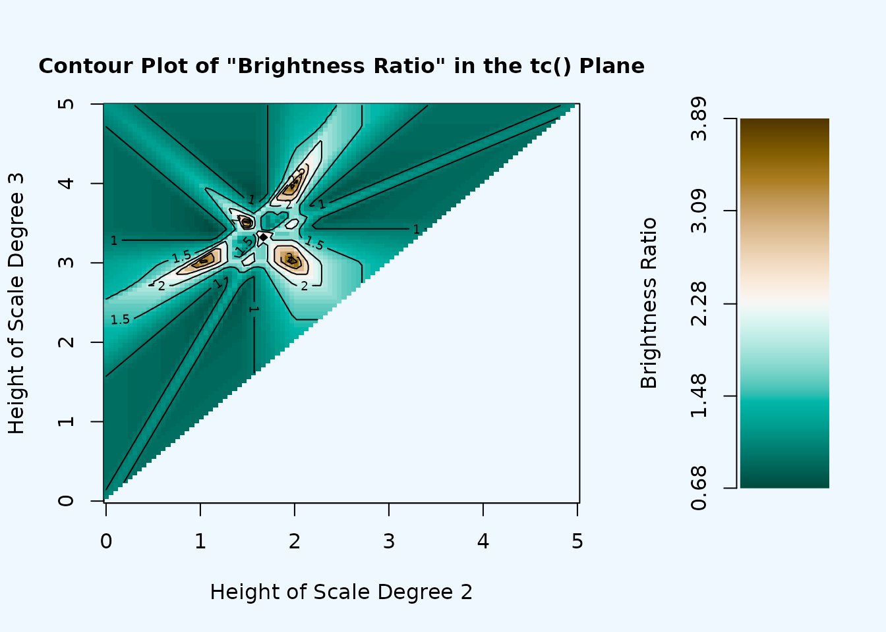

Visualizing Higher Dimensions
Source:vignettes/visualizing_higher_dimensions.Rmd
visualizing_higher_dimensions.Rmd“To deal with hyper-planes in a 14-dimensional space, visualize a 3-D space and say ‘fourteen’ to yourself very loudly. Everyone does it.”
— Geoffrey Hinton (Lecture 2, Slide 16 from his 2012 Coursera course Neural Networks for Machine Learning)
Introduction
The hardest part of using Modal Color Theory is the high number of dimensions that it needs to describe most scales. A scale with \(n\) notes lives in a space of \(n-1\) dimensions. (The \(-1\) comes from the fact that we consider scales to be transpositionally equivalent, so you can assume that the first step of every scale is 0.) This means that pentachords, the smallest collection that we’re likely to really consider to be scale-like, need to be understood in four dimensions–already not easy to visualize–and it only gets worse from there.
Fortunately, R can help us visualize the scale-space geometries two or three dimensions at a time. This won’t be a picture of the whole space all at once, but it’s a lot better than nothing. This vignette models using musicMCT to depict a few specific cross-sections of the hyperplane arrangements.
We’re going to explore the specific but important case of heptachords, using a strategy inspired by the old practice of building scales by combining two tetrachords. This practice derives from ancient Greek music theory and forms an important part of the theory of Arabic maqamat. I should stress, though, that this vignette is inspired by those theories, not an attempt to explain or reformulate them. I’m not an expert in either subject, and a maqam is more than just an ordered collection of fixed pitches. Still, I do suspect that tetrachordal thinking is useful at least in part for the way that it simplifies the range of possibilities that a musician must consider when using a scale. That simplification is a point of commonality between the visualization we’re about to do and the actual musical practices of Ancient Greek and Arabic classical musics (to the extent I understand them). I’d like to think that this commonality could be enough to allow MCT’s mathematical model to enrich our understanding of these theories, but for this vignette our focus is only the technical problem of simplifying high-dimensional spaces.
Seven Notes, Tetrachords, and Two Dimensions
Defining the Spaces
Our initial approach will be to restrict attention to seven-note scales that can be built from two tetrachords according to the following plan:
- The higher tetrachord is an exact transposition of the lower tetrachord by 7 semitones.
- The lower tetrachord has a fixed first pitch of 0 and a fixed final pitch of 5.
- The higher tetrachord’s last pitch is thus exactly an octave above the first pitch of the lower. (This is a consequence of the previous two points.) Unlike Musica enchiriadis, we model scales with octave equivalence, meaning that our combination of two tetrachords produces a scale with 7 distinct pitches per octave.
- The middle two pitches of the lower tetrachord are freely variable, as long as they stay in the right order. (That is, they must be above 0, less than 5, and the second pitch must be lower than the third pitch.)
Transpositional combination of this sort is easy to perform in musicMCT with the function [tc()]. Let’s see how the normal 12-equal major scale can be derived as the transpositional combination of an (0, 2, 4, 5) tetrachord at a perfect fifth:
This structure is useful because it fixes most of the pitches in the scale, allowing only the values of the middle two notes in the lower tetrachord to vary freely. (The middle pitches of the upper tetrachord must match the lower one, so they are completely determined by our decisions about scale degrees 2 and 3.) This means that all scales with this structure live in a two-dimensional subspace of the overall heptachord geometry: the two dimensions of the subspace correspond directly to our choices for the values of scale degree 2 and 3. Let’s define a function that takes in a pair of choices for the variable scale degrees (i.e. a “genus” in Ancient Greek theory) and returns an entire scale:
scale_from_genus <- function(genus) {
sd2 <- genus[1]
sd3 <- genus[2]
tc(c(0, sd2, sd3, 5), c(0, 7))
}Since the space of such scales is only two dimensional, it will be easy to visualize on a normal x-y plot. The space is a planar slice through the complete 6-D heptachord space. For concision, I’ll call it the “tc() plane” since we can build any scale in it with tc().
To understand the tc() plane’s relationship to the whole heptachord
space, recall that every “hue” in MCT is a ray that emanates outward
from the perfectly even scale at the center of the space (in this case,
seven-tone equal temperament). The perfectly even heptachord cannot be
constructed by scale_from_genus(), so it does not lie on
the tc() plane. Therefore, each point in our visualization will be an
intersection between some hue and our tc() plane. You might think of our
visualization as a window pane that we’re looking through: each spot on
the pane actually corresponds to a line of sight in our field of view.
Figure 1 sketches this schematically, but remember that the actual tc()
plane is embedded in a 6-D space rather than the normal 3-D world:
Figure 1: Schematic representation of the tc() plane in heptachord space
Figure 1 is not a precise picture of heptachord space, but as a step toward interpreting our actual visualizations, we might imagine that the ray labeled “hue 1” represents the hue of meantone major scales. Another way to say this is that “hue 1” represents all the heptachords that have Carey and Clampitt’s property of “well formedness” and can be represented as the pattern of steps LLSLLLS where L and S represent large and small steps. As long as L > S and the pattern of 5 large and 2 small steps adds up to a full octave, any choice of specific values for L and S will result in a scale that lies along this hue. The point where hue #1 intersects the tc() plane will be specifically the scale where L=2 and S=1, which is to say exactly the familiar major scale from 12-tone equal temperament. (We know that the intersection between the hue and the tc() plane must be this specific scale, because our tc() construction guarantees that the interval of disjunction between the two tetrachords is exactly 2 semitones, which forces our hand with regard to all the other L and S step sizes.)
Similarly, we might imagine that “hue 3” represents well-formed heptachords with the step pattern SLLLSLL, which is to say all tunings of the phrygian octave species. The visible point on both hue 3 and the tc() plane is then 12tet phrygian: (0, 1, 3, 5, 7, 8, 10).
Hue 2 has been drawn to lie in between hues 1 and 3: all three hues lie on a single plane in heptachord space which cuts across the tc() plane. The plane containing hues 1, 2, and 3 intersects the tc() plane in a line, so the three “visible points” in Figure 1 all lie on a line in the tc() plane. The visible point of hue 2 must be some intermediate scale between ionian and phrygian. If it were exactly half way between those two diatonic modes, its values would simply an average of ionian and phrygian: (0, 1.5, 3.5, 5, 7, 8.5, 10.5). This would actually be another well-formed scale with the step pattern SLSLSLS. But, given the way I’ve drawn the figure, it looks to me like hue 2 is slightly closer to hue 3 than hue 1, so we might guess that it represents the scale (0, 1.4, 3.4, 5, 7, 8.4, 10.4). This has the step pattern SLMLSLM (where M represents a medium step size somewhere between the small and large steps). This is not coincidentally a pattern that fits David Clampitt’s definition of a “pairwise well-formed” scale. Such scales are always two-dimensional subspaces that run from one well-formed hue to another.
If you aren’t familiar with well-formed and pairwise well-formed scales, don’t worry too much about the preceding paragraph. The important point is that a scalar subspace which is inherently two-dimensional (like the plane containing all of hues 1, 2, and 3) will show up in our visualization as a single line (i.e. the line connecting the three visible points in Figure 1). More generally, any structure that looks like it has dimension \(k\) in the tc() plane will actually have dimension \(k+1\) in the overall space. Our visualization is a 2-D plane but it smuggles in a third dimension, which is the one that travels in and out along the hues in Figure 1. (This dimention is what MCT calls “saturation”; it can be manipulated with saturate().) You might compare this to looking at a street map of a city, which is inherently 2-D but where you can easily imagine an invisible height dimension.
Visualizing Scalar Colors
Now that we know what the tc() plane is and have a sense of how it relates to the overall heptachord space, let’s start actually visualizing it. We’ll begin by plotting a few specific scales to use as reference points. Among scales that have familiar names in Western music theory, there are several that have the desired tetrachordal structure:
ionian <- scale_from_genus(c(2, 4)) #1
dorian <- scale_from_genus(c(2, 3)) #2
phrygian <- scale_from_genus(c(1, 3)) #3
double_harmonic <- scale_from_genus(c(1, 4)) #4
enharmonic <- scale_from_genus(c(.5, 1)) #5
demo_scales <- cbind(ionian, dorian, phrygian, double_harmonic, enharmonic)To see these scales on the plane, we define the function
tetra_plot() and feed our scales into it.
tetra_plot <- function(scales, title, ...) {
par(bg='aliceblue')
plot(scales[2, ],
scales[3, ],
xlab="Height of scale degree 2", xlim=c(-.05, 5.05),
ylab="Height of scale degree 3", ylim=c(-.01, 5.01),
...)
grid(col="gray35")
graphics::mtext(side=3, title, font=2, line=1)
}
tetra_plot(demo_scales,
"Location of 5 Reference Scales in the tc() Plane",
pch=sapply(1:5, toString)) Figure 2
The scales are marked by numbers in the order that we defined them: the ionian scale is “1”, dorian “2”, and so on. It will be useful to keep these points in mind as landmarks while we populate the space with more scales. (Note, by the way, that ionian is #1 and phrygian is #3 just like they were in Figure 1. This is just a coincidence. In our plot, dorian is #2 and doesn’t lie on a straight line between 1 and 3, so it doesn’t correspond to “hue #2” from Figure 1. We’ll come back to that “hue #2” shortly.)
The tc() plane has an inversional symmetry that’s just barely visible in this initial plot, but which becomes more conspicuous as we add scales. Both scale 2 (dorian, {0, 2, 3, 5, 7, 9, 10}) and scale 4 (double harmonic, {0, 1, 4, 5, 7, 8, 11}) are symmetrical under \(T_0 I\). All scales in the tc() plane that lie on the northwest-southeast line from #2 to #4 have this same symmetry. Moreover, pairs of scales that are reflections across that line are transformed into each other by \(T_0 I\). That’s the transformation that takes C major (at point 1) to C phrygian (at point 3). Similarly, we could imagine reflecting the scale built from the enharmonic genus at 5 across the line of inversional symmetry, which should give a new scale in the top right quadrant of the graph, with quarter-tone steps clustered toward the top of its tetrachords. Let’s verify that this works and plot the new scale as point 6:
# Invert the original enharmonic scale:
inverted_enharmonic <- tni(enharmonic, 0)
# Define a new enharmonic scale based on where we expect to plot it:
new_enharmonic <- scale_from_genus(c(4, 4.5))
# The two are the same:
rbind(inverted_enharmonic, new_enharmonic)
#> [,1] [,2] [,3] [,4] [,5] [,6] [,7]
#> inverted_enharmonic 0 4 4.5 5 7 11 11.5
#> new_enharmonic 0 4 4.5 5 7 11 11.5
# Let's plot them:
demo_scales <- cbind(demo_scales, inverted_enharmonic)
tetra_plot(demo_scales,
"Location of 6 Reference Scales in the tc() Plane",
pch=sapply(1:6, toString)) 
Figure 3
Let’s now try to visualize the landscape of the whole plane, not just individual points on it. The simplest question we might ask is “how many distinct scalar colors can be visualized on the tc() plane?” We can answer that by randomly sampling many points on the plane, calculating their sign vectors, and counting how many distinct sign vectors result. First we’ll do that only as a numeric computation, sampling 4000 points in the plane:
num_points <- 4000
parhypatai <- runif(num_points, 0, 5)
lichanoi <- runif(num_points, 0, 5)
inputs <- rbind(parhypatai, lichanoi) |> apply(MARGIN=2, FUN=sort)
random_scales <- apply(inputs, 2, scale_from_genus)
all_signvectors <- apply(random_scales, 2, signvector)
unique_signvectors <- all_signvectors |> unique(MARGIN=2) |> apply(MARGIN=2, FUN=toString) |> sort()
length(unique_signvectors)
#> [1] 26This tells us that the scales we’ve sampled represent 26 different scalar colors. We can see them by plotting all the scales, coloring each point to reflect which scalar “color” it belongs to. (Of course, the association between each visual color and the scalar structure it represents is arbitrary: there’s nothing essentially more blue or red about one scale structure than another.) I’m also going to include labels for the six “landmark” scales from Figure 3, plotted as numbers rather than colored points:
match_sv <- function(sv) {
res <- which(unique_signvectors == toString(sv))
if (length(res)==0) {
return(0)
}
res
}
scalar_colors <- apply(all_signvectors, 2, match_sv)
display_colors <- grDevices::palette.colors(26, palette="Polychrome 36")[scalar_colors]
tetra_plot(random_scales,
"26 Scalar Colors in the tc() Plane",
col=display_colors,
pch=20)
show_landmarks <- function() {
points(demo_scales[2, ], demo_scales[3, ], pch=19, cex=2.5, col="white")
points(demo_scales[2, ], demo_scales[3, ], pch=sapply(1:6, toString), font=2)
}
show_landmarks()Figure 4
Each colored polygon in this figure represents a different scale structure. For instance, landmark scale #4 (the “double harmonic” scale) sits at the boundary between two right triangles (reddish purple to its lower left and yellow-green to its upper right). Scales inside those colored polygons have three degrees of freedom to vary their pitches without fundamentally altering their structure: up/down and left/right as visualized and also in/out along their line of saturation. (Recall Figure 1.) All of the scales that Figure 4 plots as colored points have these 3 degrees of freedom: our random sample of scales on the plane didn’t produce any 1- or 2-D scales because it’s very unlikely that a randomly generated scale will have more regularity than what is required by our definition of scale_from_genus(). Nonetheless, we can still see the 1- and 2-D scales in Figure 4 as the boundaries between colored polygons. Landmark scale #4 (double harmonic), for instance, is 2-D because it lies directly on the line segment that separates the reddish purple and yellow-green triangles:
howfree(double_harmonic)
#> [1] 2Scalar colors with only one degree of freedom show up on the tc() plane as points where multiple lines intersect. All three diatonic modes that we can visualize (landmarks #1, #2, and #3) are at such intersections, and (like all well-formed scales) that have only one degree of freedom:
If we wanted to run some calculations on examples of the 1- or 2-D scales, we would need a way to generate them explicitly. We could think through defining them with a specific function, along the lines of scale_from_genus(), but musicMCT also allows us to project a given scale onto any “flat” (i.e. intersection of hyperplanes) in the arrangement. If we know the specific hyperplanes that we want to project onto, we can use project_onto(); but if we have a specific scale that already lies on the desired flat, we can use match_flat(). To see this latter function in action, let’s project all 4000 sampled scales onto the same flat as the double harmonic scale: we should end up with 4000 points all lying on the same northwest-southeast diagonal line as double harmonic. I’ll plot the new projected scales a black points, as well as the colorful points from Figure 4.
projected_scales <- apply(random_scales, 2, match_flat, target_scale=double_harmonic)
colors_for_projected_scales <- rep("#000000", num_points)
scales_for_fig5 <- cbind(random_scales, projected_scales)
colors_for_fig5 <- c(display_colors, colors_for_projected_scales)
tetra_plot(scales_for_fig5,
"Double Harmonic Scale's Flat as a Line of Black Points",
col=colors_for_fig5,
pch=20)
show_landmarks()
Figure 5
Now that we have specific examples of scales on that flat to work with, we can explore whatever properties we’re interested in. For instance, we might wonder the scales’ evenness changes as we vary along the line. We’ll calculate the evenness of each scale the lies on the flat and plot the points so that more even scales are represented by larger points.
evenness_values <- apply(projected_scales, 2, evenness)
sizes_for_fig6 <- c(rep(1, num_points), max(evenness_values)-evenness_values)
tetra_plot(scales_for_fig5,
"Line Thickness Represents Scale Evenness",
col=colors_for_fig5,
pch=20,
cex=sizes_for_fig6)
show_landmarks()
Figure 6
You can see that the largest points (and thus the most even scales) lie in the zone between landmarks 2 and 4. The scales get very uneven as we move toward the top left corner of the plot. This makes sense, because the point (0, 5) at the top left of the tc() plane represents a scale whose second step is 0 (the same as the first step) and whose third step is 5 (the same as the fourth step): such a scale is very uneven because its “stepwise motion” varies widely between not moving at all and making large leaps.
Now, most of the detail in the tc() plane lies in the square bounded by landmarks 1, 2, 3, and 4. It’s hard to tell exactly how many colors lie in that region, and similarly hard to tell exactly where the thickest point on the diagonal black line is. We can zoom in to get a better view of that part of the plane:
zoomed_tetra_plot <- function(scales, title, ...) {
par(bg='aliceblue')
plot(scales[2,],
scales[3, ],
xlab="Height of scale degree 2", xlim=c(0.95, 2.05),
ylab="Height of scale degree 3", ylim=c(2.99, 4.01),
...)
grid(col="gray35")
graphics::mtext(side=3, title, font=2, line=1)
}
zoomed_parhypatai <- runif(num_points, 1, 2)
zoomed_lichanoi <- runif(num_points, 3, 4)
zoomed_inputs <- rbind(zoomed_parhypatai, zoomed_lichanoi)
zoomed_sets <- apply(zoomed_inputs, 2, scale_from_genus)
zoomed_signvectors <- apply(zoomed_sets, 2, signvector)
zoomed_scalar_colors <- apply(zoomed_signvectors, 2, match_sv)
zoomed_display_colors <- grDevices::palette.colors(26, palette="Polychrome 36")[zoomed_scalar_colors]
points_for_fig7 <- cbind(zoomed_sets, projected_scales)
colors_for_fig7 <- c(zoomed_display_colors, colors_for_projected_scales)
sizes_for_fig7 <-c(rep(1, num_points), 3^(evenness(double_harmonic)-evenness_values))
zoomed_tetra_plot(points_for_fig7,
"Scalar Colors in the tc() Plane's Most Interesting Zone",
col=colors_for_fig7,
pch=20,
cex=sizes_for_fig7)
show_landmarks()Figure 7
I’ve exaggerated the variation in the black line’s thickness to help us see where the most even scale lies in Figure 7. The line seems to be thickest at about an x value of 1.6 and a y value of 3.4. Of course, we don’t have to eyeball this, since we can just check the evenness values directly:
which_most_even <- which.min(evenness_values)
projected_scales[, which_most_even]
#> [1] 0.000000 1.642429 3.357571 5.000000 7.000000 8.642429 10.357571We might have guessed that the maximum evenness was at the round numbers of \(1 \frac{2}{3}\) and \(3 \frac{1}{3}\), but the real answer is is somewhat more surprising:
naive_guess <- scale_from_genus(c(1+(2/3), 3+(1/3)))
actual_optimum <- scale_from_genus(c(23/14, 47/14))
evenness(naive_guess)
#> [1] 0.2519763
evenness(actual_optimum)
#> [1] 0.2474358Since evenness() returns lower values for more even scales, the
actual_optimum scale with scale degree 2 at 23/14 semitones
(about 1.6428) is in fact the most even scale on the black line in
Figure 7. Let’s plot it as landmark 7:
zoomed_tetra_plot(points_for_fig7,
"Most Even Scale at the Point Labeled #7",
col=colors_for_fig7,
pch=20,
cex=sizes_for_fig7)
show_landmarks()
points(23/14, 47/14, pch=19, cex=2.5, col="white")
points(23/14, 47/14, pch="7", font=2)Figure 8
I was surprised by this when I wrote my first draft of this vignette,
especially since the naive_guess scale is not only a
rounder number but a more regular scale. It’s at the point where 3 lines
intersect just down and right of landmark 7: it’s thus one-dimensional
and, as it turns out, well-formed:
howfree(naive_guess)
#> [1] 1
iswellformed(naive_guess)
#> [1] TRUEI was surprised because I’d fallen into a simple trap: assuming that
all apparently desirable qualities ought to coincide in one scale. This
was an easy assumption to make because so much of Western music theory
is devoted to the notion that basic musical structures (like consonant
triads and the diatonic scale) are overdetermined, points where many
neat features overlap. There’s certainly truth to this, but our example
of the naive_guess and actual_optimum scales
is a reminder that often the situation is more comparable to the tension
between Pythagorean and just meantone tunings of the diatonic scale: two
desirable properties can be optimized by scales that are quite similar
but ultimately distinct from each other. Hopefully this vignette shows
how pairing direct computation with visualization strategies can help us
explore and understand such relationships.
Smoother Images
Our aproach in the previous section involved sampling scales randomly as the first step in visualization. This is especially convenient for quick prototyping and situations where you might want to run many computations on concrete. data points. But an obvious downside of the method, in Figures 4-7, is that random sampling produces a blotchy image with gaps between the sampled points. R has other visualization tools, particularly the function image(), which have many advantages from a purely visual perspective.
Let’s use image() rather than tetra_plot() to reconstruct Figure 4:
grid_subdivisions <- 100
x <- seq(0.001, 4.999, length.out=grid_subdivisions)
y <- seq(0, 5, length.out=grid_subdivisions)
# Don't plot scales where second step is higher than third step:
order_filter <- function(x, y) {
if (x > y) {
c(0, 0)
} else {
c(x, y)
}
}
define_colors <- function(x, y) order_filter(x, y) |> scale_from_genus() |> signvector() |> match_sv()
scalar_colors <- outer(x, y, Vectorize(define_colors))
color_palette <- c("#FFFFFF", grDevices::palette.colors(26, palette="Polychrome 36"))
image(x, y, z=scalar_colors, col=color_palette,
xlab="Height of Scale Degree 2", ylab="Height of Scale Degree 3")
graphics::mtext(side=3, "26 Scalar Colors in the tc() Plane", font=2, line=1)
show_landmarks()
Figure 9
Each region in this figure is now a continuous patch of color. The
boundaries between colors ought to be straight lines, though in Figure 9
the diagonal lines are pixelated. That’s because R still creates the
plot by dividing the plane into discrete points to color. We could get a
smoother-looking plot by dividing the image more finely: you could try
increasing grid_subdivisions in the above code block to a
number greater than 100, though the larger it gets, the more time is
required to create the image.
The image() function is especially useful for visualizing values that vary more continuously than the scalar regions we’ve been plotting so far. One such value is the evenness of each scale, as we explored in Figures 6-8. Let’s use image() to plot the evenness of all points on the tc() plane. I’ll also add a cross to show the location of landmark scale #7 from Figure 8.
graphics::layout(matrix(c(1, 2), ncol=2), widths=c(5, 2))
# Plot the evenness values
measure_evenness <- function(x, y) order_filter(x, y) |> scale_from_genus() |> evenness()
evenness_values <- outer(x, y, Vectorize(measure_evenness))
fig10_palette <- grDevices::hcl.colors(100, palette="Green-Brown")
image(x, y, z=evenness_values, col=fig10_palette,
xlab="Height of Scale Degree 2", ylab="Height of Scale Degree 3")
points(23/14, 47/14, pch=4, col="white", cex=1.5)
# Make the legend
color_legend <- as.raster(matrix(rev(fig10_palette), ncol=1))
ymin <- min(evenness_values)
ymax <- max(evenness_values)
plot(c(0, 1), c(ymin, ymax), type="n", axes=FALSE, xlab="", ylab="Evenness")
rasterImage(color_legend, 0, ymin, 1, ymax)
axis(2, at = round(seq(ymin, ymax, length.out=5), 2))Figure 10
layout(matrix(c(1, 2), ncol=2), widths=c(5, 2))
# Plot the brightness ratio values
measure_ratio <- function(x, y) order_filter(x, y) |> scale_from_genus() |> ratio()
ratio_values <- outer(x, y, Vectorize(measure_ratio))
fig11_palette <- grDevices::hcl.colors(100, palette="Tofino")
image(x, y, z=ratio_values, col=fig11_palette,
xlab="Height of Scale Degree 2", ylab="Height of Scale Degree 3")
# Make the legend
color_legend <- as.raster(matrix(rev(fig11_palette), ncol=1))
ymin <- min(ratio_values)
ymax <- max(ratio_values)
plot(c(0, 1), c(ymin, ymax), type="n", axes=FALSE, xlab="", ylab="Brightness Ratio")
rasterImage(color_legend, 0, ymin, 1, ymax)
axis(2, at = round(seq(ymin, ymax, length.out=5), 2))
Figure 11
colorfunc <- function(x) tanh(x-min(x))
numpoints <- 4000
ratios <- apply(random_scales, 2, ratio)
tetra_plot(random_scales,
"Brightness Ratio of Scales in the tc() Plane",
col=hsv(colorfunc(ratios)),
pch=20)
all_signvecs <- apply(random_scales, 2, signvector)
all_signvecs_str <- apply(all_signvecs, 2, toString)
unique_signvecs <- unique(all_signvecs_str)
signvec_id <- function(signvec) which(unique_signvecs==signvec)
all_signvec_ids <- sapply(all_signvecs_str, signvec_id)
all_signvec_ids <- all_signvec_ids/max(all_signvec_ids)
plot(random_scales[2,], random_scales[3,], col=hsv(all_signvec_ids), pch=20,
xlab="Height of scale degree 2",
ylab="Height of scale degree 3")
grid(col="gray35")
numpoints <- 4000
xs <- runif(numpoints, 0, 5)
ys <- runif(numpoints, 0, 5)
inputs <- rbind(xs, ys)
inputs <- apply(inputs, 2, sort)
sets <- apply(inputs, 2, scale_from_genus)
evs <- apply(sets, 2, evenness)
par(bg='aliceblue')
plot(sets[2,], sets[3,], col=hsv(h=colorfunc(evs)), pch=20,
xlab="Height of scale degree 2",
ylab="Height of scale degree 3")
grid(col="gray35")